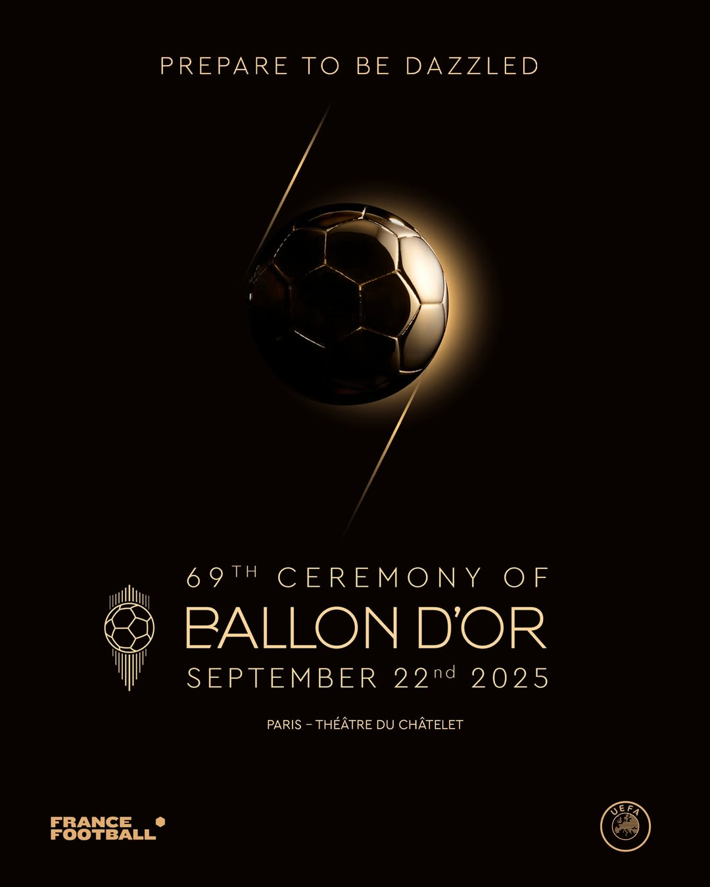

Bola De Ouro

A Cerimônia da Bola de Ouro está próxima: conheça os prêmios e seus indicados
A Bola de Ouro — conhecida mundialmente como Ballon d'Or — é a tradicional premiação da revista esportiva France Football, realizada em uma cerimônia de gala para coroar os melhores do futebol.
A edição deste ano acontecerá no dia 22 de setembro e contará com a entrega de 13 prêmios, entre eles:
Troféu Gerd Müller (masculino e feminino) – Artilharia da temporada;
Troféu Yashin (masculino e feminino) – Melhor goleiro(a) do mundo;
Troféu Kopa (masculino e feminino) – Melhor jogador(a) sub-21;
Prêmio Sócrates – Reconhecimento a ações sociais promovidas por personalidades do futebol;
Melhor Clube do Ano (masculino e feminino);
Troféu Cruyff (masculino e feminino) – Melhor treinador(a);
Bola de Ouro – concedida ao melhor jogador e à melhor jogadora do mundo.
A escolha dos vencedores será feita por jornalistas representantes de cada um dos 100 países mais bem colocados no Ranking FIFA, considerando o desempenho da temporada 2024/2025 (de agosto de 2024 a julho de 2025).
Este ano, o Brasil tem oito indicados distribuídos nas diferentes categorias:
Vinícius Jr. e Raphinha, concorrendo ao prêmio principal;
Marta e Amanda Gutierres, indicadas a Melhor Jogadora do Mundo pelas atuações na Copa América;
Arthur Elias, treinador da seleção brasileira, na disputa por Melhor Treinador de Futebol Feminino;
Alisson Becker, indicado ao Troféu Yashin pelas atuações monumentais no Liverpool;
Botafogo, concorrendo ao prêmio de Melhor Clube do Ano por atuações em território nacional e internacional.
Agora, confira todos os indicados de cada categoria:
Troféu Kopa Feminino:
Michele Agyemang (Brighton, Inglaterra)
Linda Caicedo (Real Madrid, Colômbia)
Wieke Kaptein (Chelsea, Holanda)
Vicky Lopez (Barcelona, Espanha)
Claudia Martinez (Olímpia, Paraguai)
Troféu Kopa Masculino:
Ayyoub Bouaddi (Lille, França)
Pau Cubarsi (Barcelona, Espanha)
Desiré Doué (PSG, França)
Estevão (Palmeiras/Chelsea, Brasil)
Dean Huijsen (Bournemouth/Real Madrid, Espanha)
Myles Lewis-Skelly (Arsenal, Inglaterra)
Rodrigo Mora (Porto, Portugal)
João Neves (PSG, Portugal)
Lamine Yamal (Barcelona, Espanha)
Kenan Yildiz (Juventus, Turquia)
Troféu Yashin Feminino:
Ann-Katrin Berger (Gotham FC, Alemanha)
Cata Coll (Barcelona, Espanha)
Hannah Hampton (Chelsea, Inglaterra)
Chiamaka Nnadozie (Brighton/Paris FC, Nigéria)
Daphne van Doomselaar (Arsenal, Holanda)
Troféu Yashin Masculino:
Alisson Becker (Liverpool, Brasil)
Bono (Al Hilal, Marrocos)
Lucas Chevalier (Lille, França)
Courtois (Real Madrid, Bélgica)
Donnarumma (PSG/Manchester City, Itália)
Dibu Martinez (Aston Villa, Argentina)
Oblak (Atlético de Madrid, Eslovênia)
David Raya (Arsenal, Espanha)
Matz Sels (Nottingham Forest, Bélgica)
Yann Sommer (Inter de Milão, Suíça)
Troféu Cruyff Feminino:
Sonia Bompastor (Chelsea)
Arthur Helias (Seleção Brasileira)
Justine Madugu (Seleção Nigeriana)
Renée Slegers (Arsenal)
Sarina Wiegman (Seleção Inglesa)
Troféu Cruyff Masculino:
Antonio Conte (Napoli)
Luis Enrique (PSG)
Hansi Flick (Barcelona)
Enzo Maresca (Chelsea)
Arne Slot (Liverpool)
Melhor clube Feminino:
Arsenal (Inglaterra)
Barcelona (Espanha)
Chelsea (Inglaterra)
OL Lyonnes (França)
Orlando Pride (Estados Unidos)
Melhor clube Masculino:
Barcelona (Espanha)
Botafogo (Brasil)
Chelsea (Inglaterra)
Liverpool (Inglaterra)
PSG (França)
Melhor jogadora:
Sandy Baltimore (Chelsea, França)
Barbra Banda (Orlando Pride, Zâmbia)
Aitana Bonmatí (Barcelona, Espanha)
Lucy Bronze (Chelsea, Inglaterra)
Klara Bühl (Bayern de Munique, Alemanha)
Mariona Caldentey (Arsenal, Espanha)
Sofia Cantore (Juventus/WA Spirit, Itália)
Steph Catley (Arsenal, Austrália)
Melchie Dumornay (Olympique Lyonnés, Haiti)
Temwa Chawinga (Kansas City, Malawi)
Emily Fox (Arsenal, Estados Unidos)
Cristina Girelli (Juventus, Itália)
Esther González (Gotham FC, Espanha)
Caroline Graham Hansen (Barcelona, Noruega)
Hannah Hampton (Chelsea, Inglaterra)
Pernille Harder (Bayern Munich, Dinamarca)
Patri Guijarro (Barcelona, Espanha)
Amanda Gutierres (Palmeiras, Brasil)
Lindsey Heaps (Olympique Lyonnés, Estados Unidos)
Chloe Kelly (Arsenal, Inglaterra)
Marta (Orlando Pride, Brasil)
Clara Matéo (Paris FC, França)
Ewa Pajor (Barcelona, Polônia)
Claudia Pina (Barcelona, Espanha)
Alexia Putellas (Barcelona, Espanha)
Alessia Russo (Arsenal, Inglaterra)
Johanna Rytting Kaneryd (Chelsea, Suécia)
Caroline Weir (Real Madrid, Escócia)
Leah Williamson (Arsenal, Inglaterra)
Melhor jogador:
Jude Bellingham (Real Madrid, Inglaterra)
Ousmane Dembélé (PSG, França)
Donnarumma (PSG/Manchester City, Itália)
Desiré Doué (PSG, França)
Dumfries (Inter de Milão, Holanda)
Guirassy (Borussia Dortmund, Guiné)
Viktor Gyökeres (Sporting/Arsenal, Suécia)
Erling Haaland (Manchester City, Noruega)
Hakimi (PSG, Marrocos)
Harry Kane (Bayern de Munique, Inglaterra)
Kvaratskhelia (Napoli/PSG, Geórgia)
Robert Lewandowski (Barcelona, Polônia)
Mac Allister (Liverpool, Argentina)
Lautaro Martínez (Inter de Milão, Argentina)
Kylian Mbappé (Real Madrid, França)
McTominay (Napoli, Escócia)
Nuno Mendes (PSG, Portugal)
João Neves (PSG, Portugal)
Vitinha (PSG, Portugal)
Michael Olise (Bayern de Munique, França)
Cole Palmer (Chelsea, Inglaterra)
Pedri (Barcelona, Espanha)
Raphinha (Barcelona, Brasil)
Declan Rice (Arsenal, Inglaterra)
Fabian Ruiz (PSG, Espanha)
Mohamed Salah (Liverpool, Egito)
Virgil Van Dijk (Liverpool, Holanda)
Vinicius Jr. (Real Madrid, Brasil)
Florian Wirtz (Bayer Leverkusen/Liverpool, Alemanha)
Lamine Yamal (Barcelona, Espanha)
Fora as premiações que não precisam ser votadas — como o Troféu Gerd Muller e o Prêmio Sócrates — existem diversas dúvidas de quem vai ser os melhores dessa temporada.
No futebol feminino, entre todas as jogadores, as que mais se destacaram nessa temporada foram as jogadoras do Barcelona e do Arsenal, precisamente convocadas da Espanha e Inglaterra na Eurocopa, como as inglesas venceram tanto a Eurocopa quanto a Champions, é bem provável da maioria das premiações ir para a Inglaterra.
E no masculino, as premiações serão divididas entre o PSG e o Barcelona, foram os melhores times dessa temporada e que demonstraram o melhor futebol, com o PSG vencendo a tríplice coroa europeia de forma encantadora e brilhante e o Barça vencendo a tríplice coroa espanhola pra cima do maior rival.
Para o prêmio tradicional especialistas, torcedores e jornalistas estão divididos entre dois nomes: Lamine Yamal e Ousmane Dembélé. Dembélé venceu a Champions League sendo o melhor jogador da competição, onde foi ultra decisivo, em todas as fases da competição e se destacou na Copa do Mundo de Clubes mesmo após voltar de uma lesão, e para muitos, é o favorito. E temos Lamine também teve seus momentos de gênio, decidindo clássicos e encantando o mundo com seu futebol com seus dribles, passes e gols, que deixam a disputa em aberto.
Embora a France Football tenha tomado decisões questionáveis nos últimos anos, a Bola de Ouro continua sendo a premiação mais importante do futebol mundial. Mesmo cercado por diversos critérios sem sentido e debates polêmicos, o prêmio segue influenciando a carreira dos jogadores e treinadores. Permanece sendo um dos maiores marcos do futebol e sempre vai ser, o que resta é torcer para que melhorem os aspectos que tornam o prêmio tão questionado ultimamente.